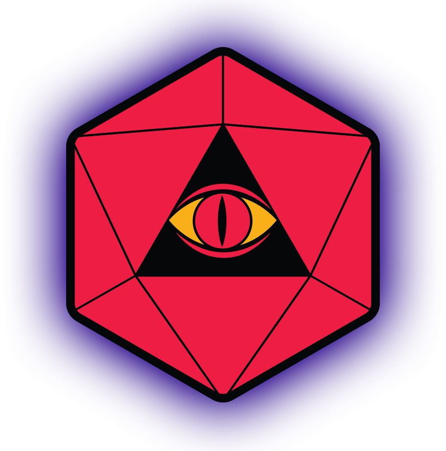
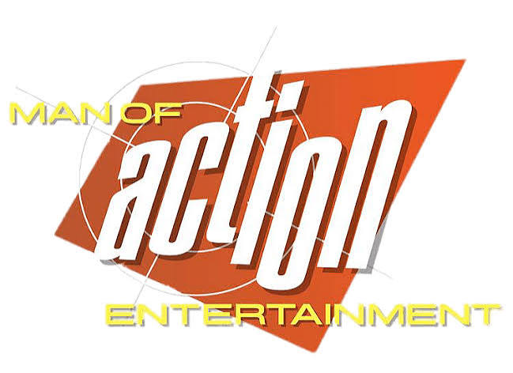

D20 CULTURE
A D20 Culture é uma empresa brasileira dedicada à criação e ao desenvolvimento de experiências no universo geek. Com atuação no mercado de jogos e entretenimento, a empresa transforma grandes universos em novas experiências, conectando histórias, criatividade e jogadores. Neste projeto, assume o desenvolvimento do RPG de mesa de Ben 10, levando esse universo para uma nova forma de aventura e exploração.

MAN OF ACTION
Man of Action Entertainment é o coletivo criativo responsável pela criação de Ben 10, formado pelos quadrinistas e roteiristas Joe Casey, Joe Kelly, Duncan Rouleau e Steven T. Seagle. Desde sua fundação, em 2000, o grupo desenvolve histórias e personagens que conquistaram públicos ao redor do mundo. Sua participação neste projeto conecta o RPG às origens e à identidade criativa do universo de Ben 10.